Isi rumah
Bawa minyak terpakai ke tapak kutipan berjadual di kawasan perumahan anda. Jadual dimaklumkan lebih awal melalui WhatsApp kepada penduduk yang bersetuju menerima makluman.
Kutipan Minyak Masak Terpakai (UCO) · Kuala Lumpur & Selangor
Kutipan yang teratur daripada isi rumah, premis makanan dan dapur pusat. Minyak ditimbang di hadapan anda, dibayar serta-merta, dan setiap transaksi direkod secara digital.
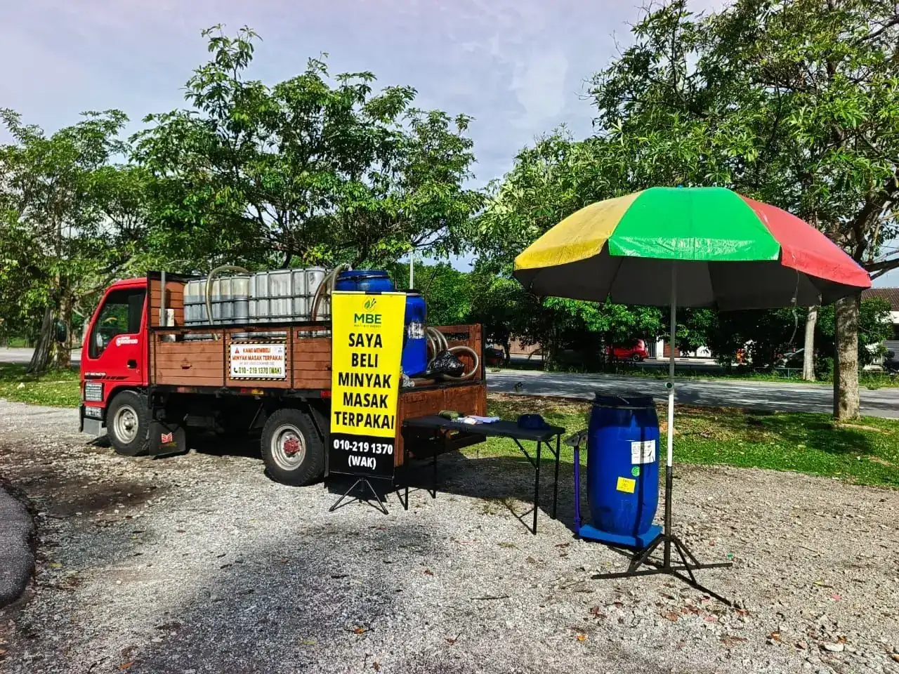
Perkhidmatan
Bawa minyak terpakai ke tapak kutipan berjadual di kawasan perumahan anda. Jadual dimaklumkan lebih awal melalui WhatsApp kepada penduduk yang bersetuju menerima makluman.
Kutipan berkala terus di premis anda mengikut jumlah penggunaan. Tiada caj kutipan. Bayaran dibuat mengikut berat sebenar pada setiap kutipan.
Pengaturan kutipan tetap untuk jumlah besar, berserta rekod transaksi lengkap bagi tujuan pengauditan dan laporan alam sekitar syarikat anda.
Cara jual
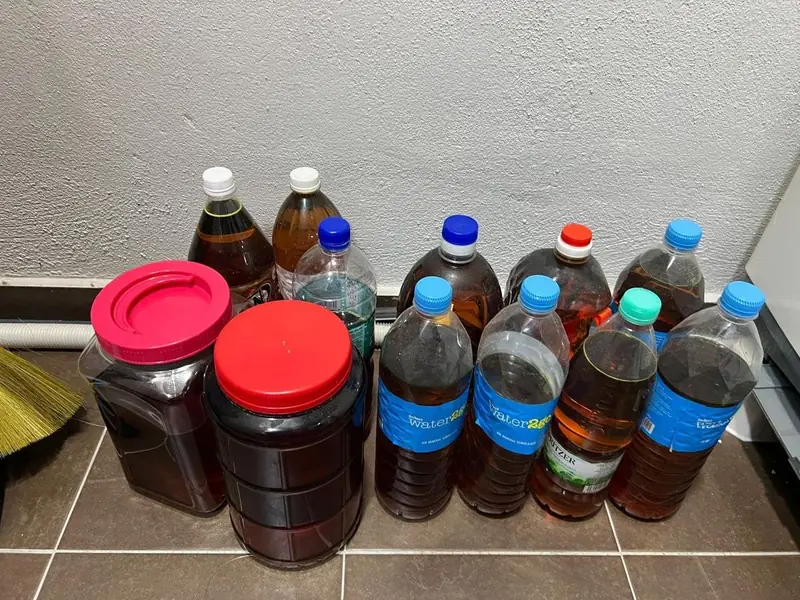
Biarkan minyak sejuk, tapis sisa makanan, dan simpan dalam botol atau bekas bertutup. Jangan campur dengan air atau bahan lain.
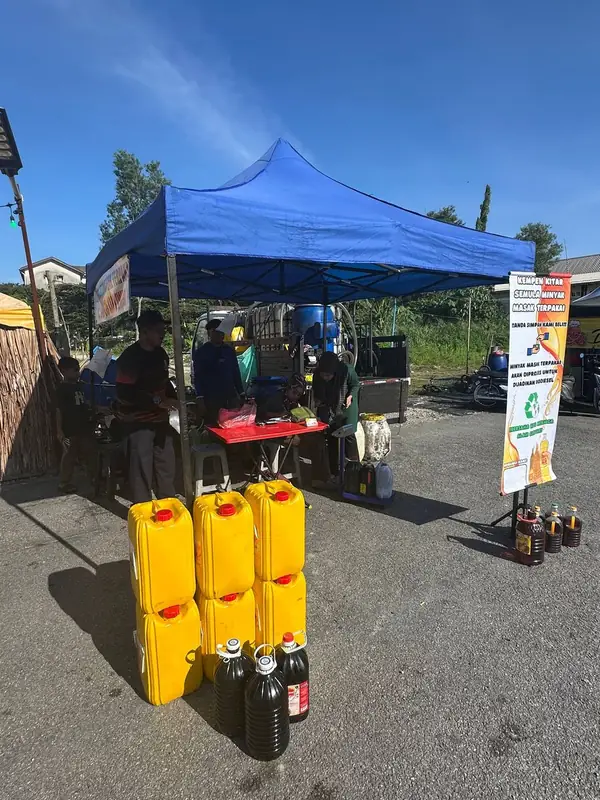
WhatsApp kami untuk kutipan di premis, atau bawa ke tapak kutipan terdekat pada tarikh yang dimaklumkan.
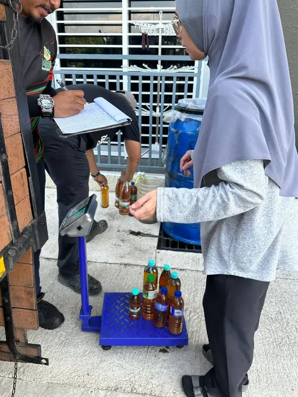
Minyak ditimbang menggunakan penimbang digital. Berat dan harga semasa sekilogram ditunjukkan kepada anda.
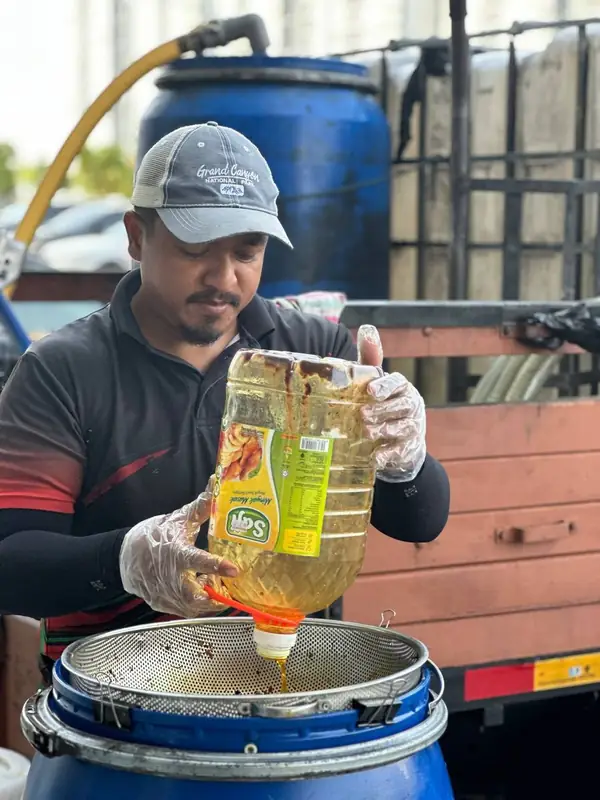
Bayaran tunai dibuat serta-merta. Transaksi direkod dalam sistem kami: tarikh, lokasi, berat dan jumlah bayaran.
Ketelusan
Petugas kami menggunakan sistem kutipan digital yang berfungsi walaupun tanpa internet di tapak. Bagi setiap transaksi, sistem menyimpan:
Rekod tidak boleh dipadam, dan setiap pindaan disimpan bersama nama pegawai serta sebabnya. Ini membolehkan aliran minyak dikesan dari sumber hingga ke pemproses, sekali gus menghalang minyak terpakai daripada kembali ke pasaran makanan.
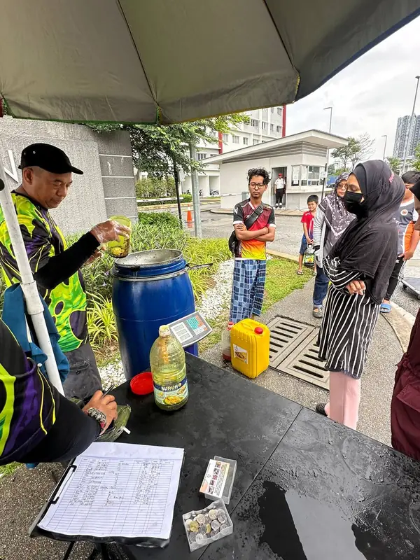
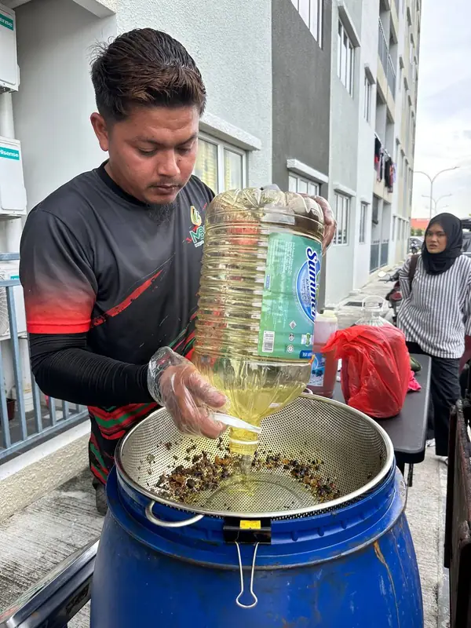
Pematuhan & dokumentasi
| Timbangan | Penimbang digital digunakan di setiap tapak, dan berat ditunjukkan kepada penjual sebelum bayaran. |
|---|---|
| Pelarasan harga | Sebarang pelarasan (contohnya minyak bercampur air) diterangkan kepada penjual dan direkod bersama sebabnya. |
| Perlindungan data peribadi | Nombor telefon pelanggan digunakan untuk rekod transaksi dan makluman kutipan (dengan persetujuan) sahaja, selaras dengan Akta Perlindungan Data Peribadi 2010. |
| Rekod transaksi | Disimpan secara digital dengan sandaran harian yang disulitkan. Boleh dikemukakan kepada pihak berkuasa yang berkaitan atas permintaan rasmi. |
Mengapa kitar semula
Minyak yang dibuang ke sinki atau longkang membeku dan menyumbat paip, serta mencemarkan sumber air.
Kutipan yang direkod menghalang minyak terpakai daripada diproses semula secara haram dan dijual kembali sebagai minyak masak.
Minyak masak terpakai ialah bahan mentah untuk biodiesel dan bahan api rendah karbon.
Di lapangan
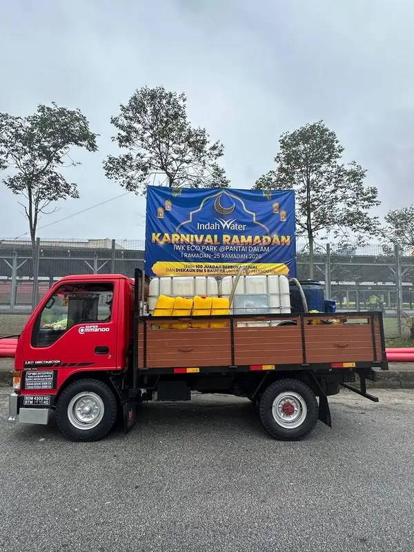
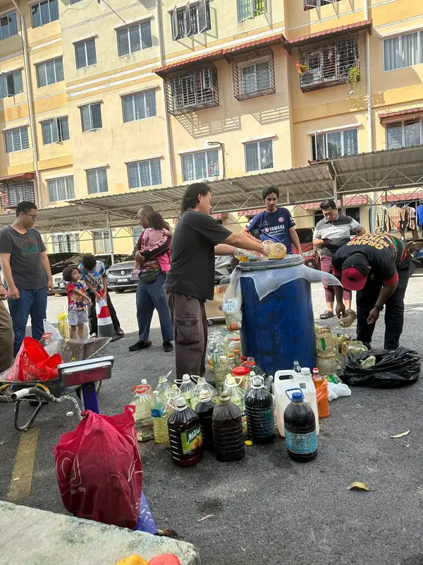
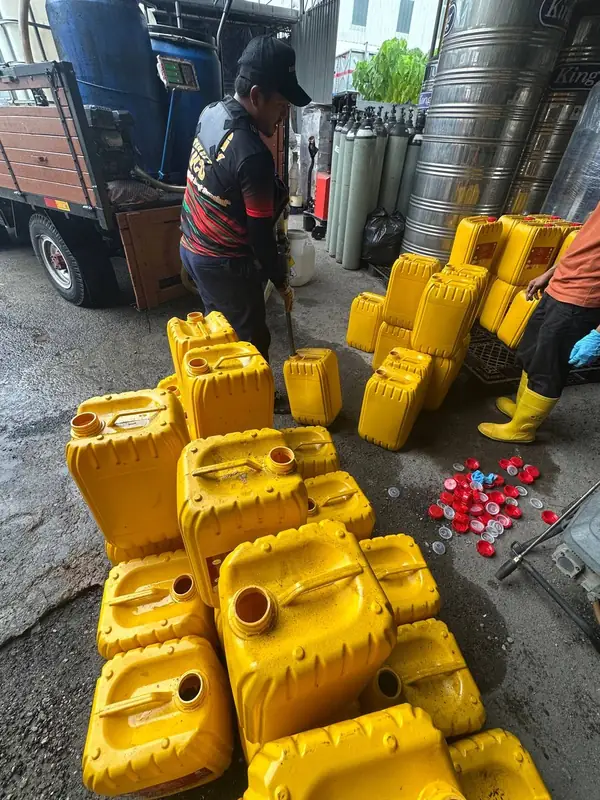
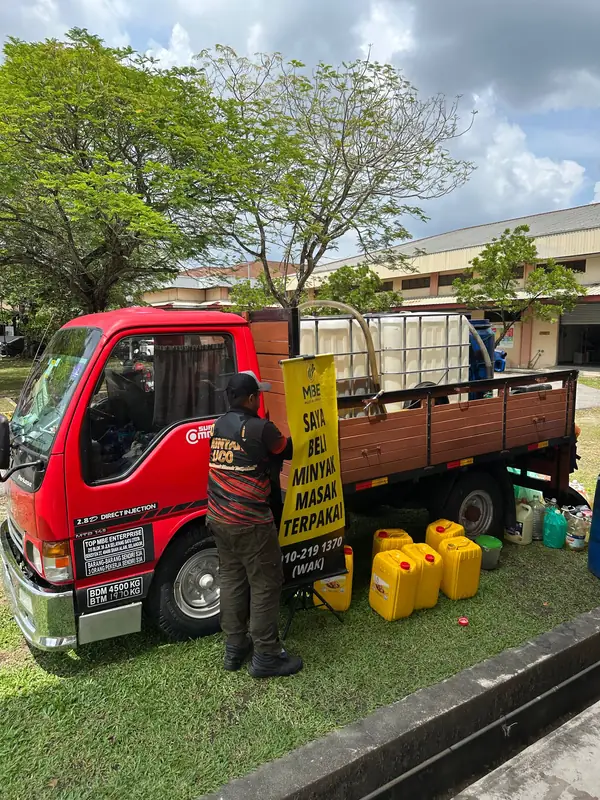
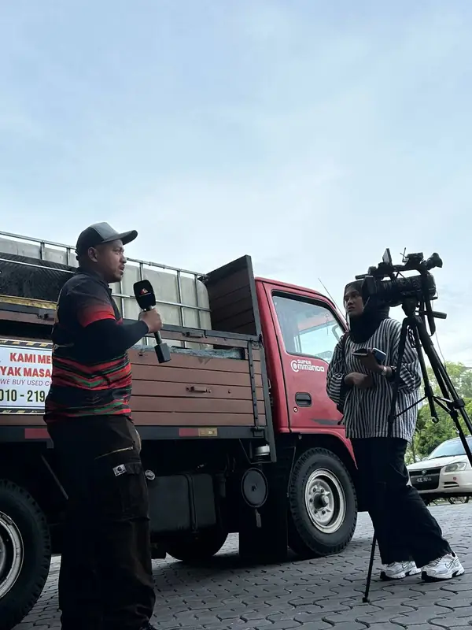
Liputan media
Usaha kutipan minyak masak terpakai kami bersama komuniti telah mendapat liputan media.
Kawasan operasi
Kami mencari agen kutipan di kawasan di atas. Agen dibekalkan peralatan, latihan dan sistem rekod digital.
Mohon melalui WhatsAppSoalan lazim
Minyak masak terpakai daripada sayuran atau kelapa sawit, contohnya minyak menggoreng daripada dapur rumah atau restoran. Kami tidak menerima minyak hitam (minyak enjin), minyak pelincir atau bahan kimia.
Harga dikira mengikut berat (kg) pada harga semasa, yang berubah mengikut pasaran. Hubungi kami melalui WhatsApp untuk harga terkini.
Minyak yang bercampur air atau mengandungi banyak sisa makanan mempunyai nilai yang lebih rendah. Sebarang pelarasan diterangkan kepada anda sebelum bayaran dan direkod bersama sebabnya.
Untuk isi rumah di tapak kutipan, tiada minimum. Untuk kutipan di premis, hubungi kami melalui WhatsApp untuk pengaturan mengikut jumlah anda.
Kami hanya menyimpan nombor telefon dan nama panggilan untuk rekod transaksi. Makluman kutipan dihantar hanya jika anda bersetuju, dan anda boleh menarik balik persetujuan pada bila-bila masa.
Hubungi kami
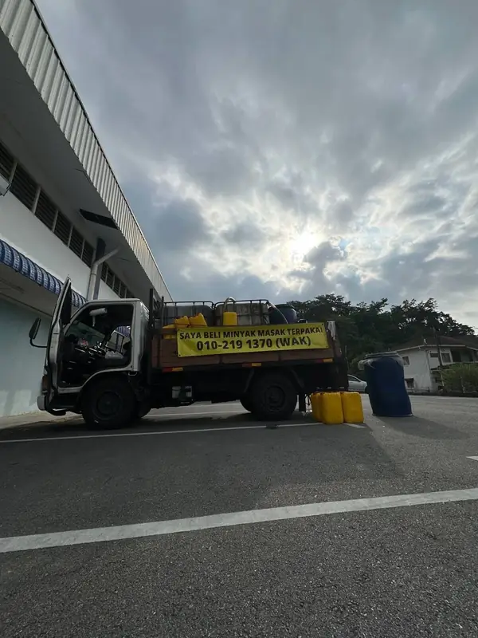